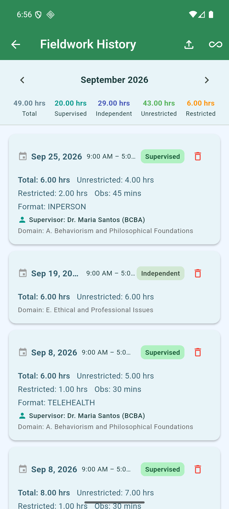

FieldMate
For RBTs working toward BCBA certification: log fieldwork hours your supervisor can actually verify. Replace the shared spreadsheet with a proper log: supervised vs. independent, all 9 BACB domains, restricted and unrestricted caps tracked as you go, entirely on your device.

Android testing: join here. Not publicly listed yet.
9 BACB domains · 2,000 / 1,500 hour pathways · 100% on your device

The problem: the fieldwork spreadsheet
Fieldwork hours get logged in a shared spreadsheet that someone has to reconcile the night before a review. Supervised and independent time blur together, percentages are worked out by hand, and a minutes-versus-hours slip can quietly throw a month off.
- Two numbers matter to your supervisor: how many hours you've logged and what share was supervised.
- Entries need a domain, a supervisor and a supervision format every time.
- Your BACB ID, address and hours are personal, so you may not want them in someone else's cloud.
How it works
- Add your profile: name, BACB ID, education, and which pathway you're on, Standard or Concentrated.
- Add your supervisor: name, credential (BCBA or BCBA-D) and their BACB ID, so it's already on every report.
- Add your employer: where the fieldwork happens, attached automatically to entries you log.
- Log each entry: pick a domain, mark it supervised or independent, and enter hours (plus observation minutes, if supervised).
- Export when it's time: a dated PDF or CSV, split by domain and hour type, ready to hand your supervisor.
Features
- Two pathways built in. Standard (2,000 hrs, 5% supervision) or Concentrated (1,500 hrs, 10%), with thresholds configurable as the BACB updates them.
- Supervised vs. independent. Observation minutes, supervision format and the restricted/unrestricted split are tracked per entry, with a confirmation step so minutes never get mistaken for hours.
- Local-first and locked down. Your BACB ID, address and hours stay in a database on your device. Optional PIN or biometric lock; optional Google Drive backup, never required.
- Export-ready reports. A dated PDF or CSV, split by domain and hour type, ready the moment your supervisor asks.
Screenshots



Screenshots use synthetic demo data.
Get it
Android, closed testing on Google Play. FieldMate isn't in the public store yet, so there is no public store link. Spots are limited: send a quick email and you'll be added to the tester list.
Frequently asked questions
Who is FieldMate for?
Registered Behavior Technicians (RBTs) logging supervised and independent fieldwork hours toward BCBA certification.
Which pathways does it support?
Standard (2,000 hours, 5% supervision) and Concentrated (1,500 hours, 10%). The thresholds are configurable, so you can change them as the BACB updates its requirements.
Is FieldMate an official BACB tool?
No. FieldMate is not affiliated with or endorsed by the BACB. Always confirm current requirements with your supervisor and the BACB's own documents.
Where is my data stored?
In a database on your device. Your BACB ID, address and hours stay there. We don't operate servers that collect your fieldwork data. Optional PIN or biometric lock, and optional Google Drive backup that is never required.
What does the Google Drive backup access?
If you turn it on, FieldMate requests only its own private app-data area (the drive.appdata scope) in your own Google Drive. It is off by default.
What can I export?
A dated PDF or CSV report, split by domain and hour type, that you can share with your supervisor using your device's own share sheet.
Which devices does it run on?
Android. It is currently in closed testing on Google Play.
How do I get access?
Follow the steps on the Android testing page: email jbudgetsupport@gmail.com with the subject “FieldMate Android tester” and you'll be added to the tester list. Spots are limited.
Guides
Log entries, supervision percentages and reports: browse the FieldMate guides.
Privacy and terms
Privacy policy · Terms of service · FieldMate docs
FieldMate is not affiliated with or endorsed by the BACB.